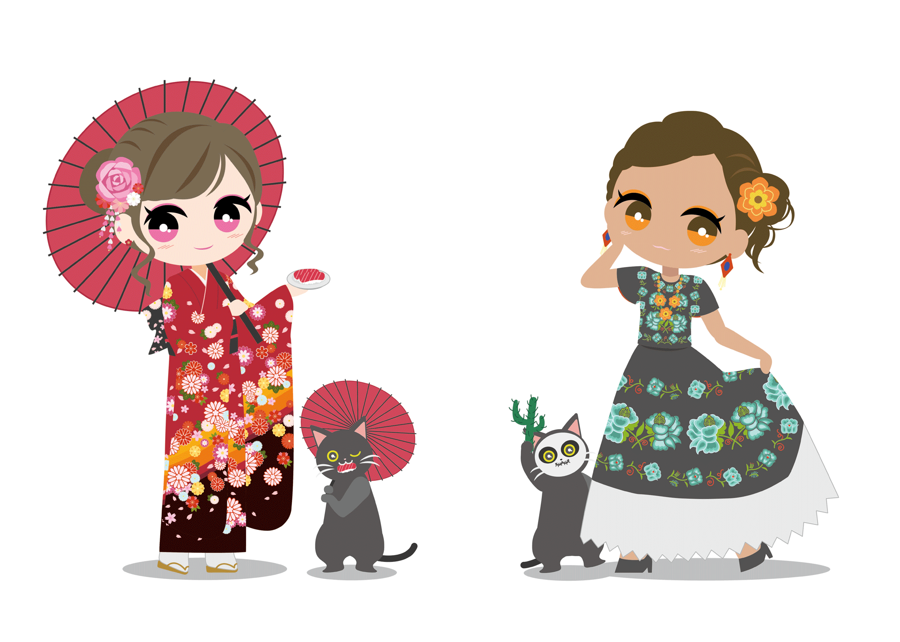
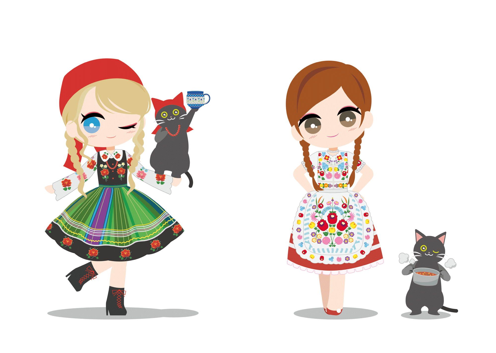

WORKS

Web

Graphic
∨

Illust / art
イラストレーションと冊子デザイン
世界の民族衣装コレクション

実物の冊子
- 制作時期
- 2022 年 / 4 ヶ月間
- 使用ツール
- Illustrator、Indesign
- ターゲット
- 10 〜20 代女性へ向けて
- 動機
- 卒業制作
概要
世界の民族衣装をテーマに22 ヶ国のイラストとA5 冊子制作しました。なかなか海外には行けないけれどこのイラストや冊子を見ること・読むことで世界旅行をした気分になり楽しめるというコンセプトです。メインが服なので柄の作り込みを意識しました。一緒には猫が付いていて、その国の有名なものなどを猫で特徴を表現しています。
ポーランド / ハンガリー民族衣装
アイテム
22ヶ国のイラストまとめ
冊子

冊子の中身ページ
冊子では文章で解説を入れたり、細かい部分をピックアップし拡大して見せました。中には、22ヶ国のイラストを作った時に使った柄をランダムに配置したデザインを入れました。